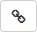

“Edit” window |


|
“Edit” window |
|
 [user name] - user name in the alarm control panel. Hover the cursor over the
[user name] - user name in the alarm control panel. Hover the cursor over the  icon to see the user number in the alarm control panel.
icon to see the user number in the alarm control panel.
INTEGRA code - user code in the alarm control panel.
 - click to see the code being entered.
- click to see the code being entered.
 - click to hide the code being entered.
- click to hide the code being entered.
 [user name] - user name in the INTEGRUM system.
[user name] - user name in the INTEGRUM system.
- click to go to the “Access to control panel” tab on the INTEGRUM user data screen. The button is displayed when the control panel user is linked with the INTEGRUM user.
[object name] - name of the object to which the user belongs. If there is only one object in the control panel, this field is not displayed.
Partitions - list of partitions belonging to the object. The user has access to partitions if the box next to the partition name is checked.
User schedule - in this field, you can select one of predefined schedules of the alarm control panel user. The schedule specifies the type and rights of the user.
[user type and rights list] - information about the type and rights of the user is displayed in this field.
- click to add an alarm control panel user to the INTEGRUM database (see Adding alarm control panel user to the INTEGRUM database (“Control panels” screen)). The button is displayed when the user control panel is not linked with the INTEGRUM user.
 - click if you want to link an alarm control panel user with an INTEGRUM user (see Linking alarm control panel user with INTEGRUM user (“Control panels” screen)). The button is displayed when the control panel user is not linked with the INTEGRUM user.
- click to unlink the alarm control panel user from the INTEGRUM user (see Unlinking users (“Control panels” screen)). The button is displayed when the control panel user is linked with the INTEGRUM user.
Cancel - click to close the window without saving changes.
OK - click to save the changes and close the window.